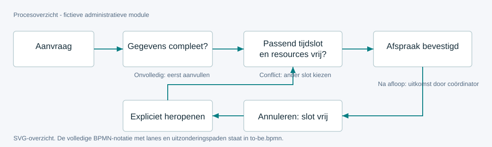

De analyse achter de afspraak.
Een fictieve module, van tegenstrijdige klantvragen naar expliciete regels, tests en overdracht. Administratieve planning; geen medische besluitvorming.
1. Begrijpen vóór bouwen
De planner wil alvast capaciteit vasthouden. De coördinator wil volledige gegevens vóór reservering. De medewerker wil een nieuwe datum zelf kunnen afstemmen. Discovery maakt die spanning expliciet en legt vast wie het beleid beslist.
- P-01: werkpost ontbreekt; toch willen plannen.
- P-02: verschillende slot-ID's kunnen dezelfde arts overlappen.
- P-03: een annulering moet ook de capaciteit vrijgeven.
- P-04: herplanning is geen automatische afspraak.
- P-05/06: verouderde wijzigingen, retries en uitlegbare historie.
2. Behoefte → regel → acceptatie
De onderstaande catalogus wordt rechtstreeks geladen uit dezelfde JSON als de documentatie. P-03 → FR-04 → R-04 → AC-15 → K-04 is de centrale bewijsroute.
3. Proces, status en data

Onvolledig → Klaar → Gepland. Annuleren maakt Geannuleerd en verwijdert de actieve reservering. Heropenen maakt Klaar zonder afspraak. Na afloop kan de coördinator Afgerond of Niet verschenen vastleggen.
Actieve capaciteit en historie zijn afzonderlijk: het dossier houdt alleen de huidige slotkoppeling; het activiteitenlog bewaart de vorige afspraak. Productie vereist transactionele resourcecontrole om twee gelijktijdige boekingen te voorkomen.
4. Keuzes met alternatieven
5. Valideren en bijsturen
De gedeelde domeinregels worden met benoemde AC-tests getoetst. Browseracceptatie controleert echte interacties, herladen, rollen, filters en tour op desktop en mobiel. De referentie en screenshots worden visueel vergeleken.
Key-user-UAT, echte autorisatie, transactionele concurrency en outboxaflevering zijn nog uit te voeren productievoorwaarden. De fictieve defectlog en wachtlijst-CR tonen hoe nieuwe informatie het ontwerp verandert zonder stil de scope te vergroten.
6. Pilot en overdracht
Migratie vraagt gevalideerde bron-ID's, een exceptionlijst en reconciliatie van statussen en actieve reserveringen. Go-live vereist key-usersign-off en bewezen backendbescherming. Rollback houdt rekening met al verstuurde bevestigingen, niet alleen databaseherstel.
De handleiding volgt de taken van de planner. Het supportscenario behandelt een ontbrekende bevestiging zonder de afspraak opnieuw te boeken.
7. Meetplan, geen behaalde resultaten
Alle baselines en doelen hieronder zijn illustratieve aannames. Eerst meten, daarna de verandering beoordelen. Domeintests bewijzen geen klantbesparing of productieresultaat.
Illustratief rekenscenario: 600 aanvragen per maand × 3 minuten minder herstelwerk = 30 uur capaciteit. Bij 35 euro/uur is dat 1.050 euro/maand capaciteitswaarde, geen automatische loonkostbesparing.
Wat deze case niet aantoont
Geen werkelijk klantinterview, klant-UAT of productie-implementatie. Geen echte login, medische gegevens, berichtaflevering of databaseconcurrency. De vertaalsamenvattingen bewijzen geen gesproken taalniveau. Persoonlijk begrip moet de kandidaat zelf aantonen.
Volg de kernflow Casebook PDF